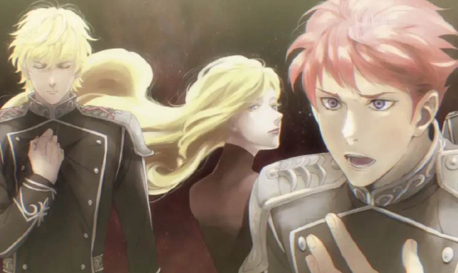

In AD 2801, the Galactic Federation is formed, resulting in political power moving away from the planet Earth (now named Terra) and the Space Era calendar replacing the Gregorian calendar, with 2801 AD now being SE 1. Rudolf von Goldenbaum, an ex-admiral turned dictatorial politician, is elected to power. After declaring himself Emperor Rudolf I, absolute monarch of the renamed Galactic Empire, he restarts the calendar again, beginning the Imperial Calendar on SE 310/AD 3110. His regime adopts extremist policies, including the suppression of any opposition and the extermination of anyone perceived too weak (such as the disabled and the poor), which is carried out until his death in IC 42/SE 351/AD 3151. He also moves the capital of the Empire to the planet Odin, the third planet in the Valhalla system.
In IC 164/SE 473/AD 3273, a group of serfs in the Altair star system manage to escape captivity and make "the Long March of 10,000 Light-Years" into the Sagittarius Arm to escape the Galactic Empire, located within the Orion Arm. These people set up the Free Planets Alliance, a democratic republic which uses the Space Era calendar, founding the Alliance in SE 527/IC 218/AD 3327 on the planet Heinessen. In SE 640/IC 331/AD 3440, the first battle between the Empire and Alliance occurs, resulting in a major Alliance victory. The two realms have been at war ever since.
A third realm is also set up, the Dominion of Phezzan, a planet-state (city-state on a galactic scale) with connections to Terra. It technically remains a part of the Empire and pays tribute, but also maintains a relationship with the Alliance. Ruled by a domain lord called the "landsherr", Phezzan gains power by acting as both paragon and trickster, providing the only link between the Empire and Alliance, while simultaneously playing the two sides against one another.
The story is staged in the distant future within our own Milky Way Galaxy, starting in SE 796/IC 487/AD 3596. A portion of the galaxy is filled with terraformed worlds, inhabited by interstellar traveling human beings. For 150 years, two mighty space powers have intermittently warred with each other: the Galactic Empire and the Free Planets Alliance.
Within the Galactic Empire, based on mid-19th-century Prussia, an ambitious military genius, Reinhard von Müsel, later conferred the name Reinhard von Lohengramm, is rising to power. He is driven by the desire to free his sister Annerose, who was taken by the Kaiser as a concubine. Later, he wants not only to end the corrupt Goldenbaum dynasty, but also to defeat the Free Planets Alliance and unify the whole galaxy under his rule.
In the Free Planets Alliance Star Fleet is another genius, Yang Wen-li. He originally aspired to become a historian through a military academy, and joined the tactical division only out of need for tuition money. He was rapidly promoted to commodore because he demonstrated excellence in military strategy in a number of decisive battles and conflicts. He becomes the arch-rival of Reinhard, though they highly respect one another. Unlike Reinhard, he is better known for his underdog victories and accomplishments in overcoming seemingly impossible odds and mitigating collateral damages and casualties due to military operations.
As a historian, Yang often predicts the motives behind his enemies, narrating the rich history of his world and offering commentary. One of his famous quotes is "There are few wars between good and evil; most are between one good and another good."
Besides the two main heroes, the story is full of vivid characters and intricate politics. All types of characters – from high nobility, admirals, and politicians, to common soldiers and farmers – are interwoven into the story. The story frequently switches away from the main heroes to the Unknown Soldier fighting for his life on the battlefield.
There is a third neutral power nominally attached to the Galactic Empire, the Phezzan Dominion, a planet-state that trades with both warring powers. There is also a Terraism cult, which believes that humans should go back to Earth, gaining popularity throughout the galaxy. Throughout the story, executive political figures of Phezzan, in concert with the upper-hierarchy of the Terraism cult, orchestrate a number of conspiracies to shift the tide of the galactic war to favor their objectives. The name "Phezzan" is a reference to Fezzan, a region of modern Libya that played an analogous historical role to the one in the anime.
Christopher Farris of the Anime News Network wrote that the novels focus on "personal matters of the main players" instead of being "rote historical accounts", while the 1988-1997 anime series focuses on "the big picture of the war", with multiple characters chronicled, and the 2018 series focuses "only on the major plays by our two main actors to fit within its shorter, more focused format."